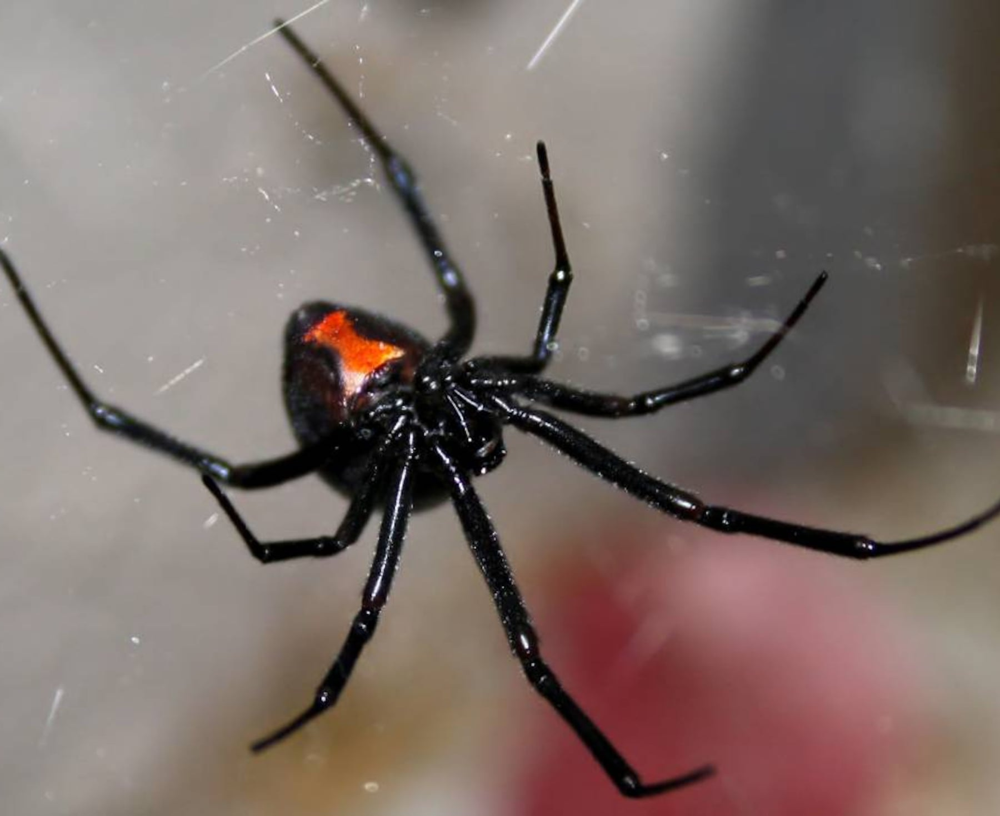

Viuda Negra (Latrodectus spp.)

Descripción
La viuda negra es una araña conocida por su apariencia oscura y su preferencia
por lugares tranquilos y protegidos. Generalmente no es agresiva,
pero puede morder si se siente atrapada o presionada.
¿Dónde se esconden?
- Áreas oscuras y poco transitadas (garajes, almacenes, cuartos de herramientas).
- Detrás de cajas, muebles, neveras o estanterías.
- Debajo de madera, tiestos o escombros en patios.
- Grietas y rincones con telarañas irregulares.
Riesgos
- La mordida puede causar dolor intenso y requerir evaluación médica.
- Mayor riesgo en niños, adultos mayores o personas sensibles.
- Preocupación cuando hay actividad en áreas de uso frecuente.
Señales de posible presencia
- Telarañas irregulares en rincones bajos.
- Avistamientos al mover objetos almacenados.
- Actividad nocturna en garajes o áreas exteriores protegidas.
Prevención
- Reducir acumulación de cajas y escombros.
- Usar guantes al mover madera o objetos guardados.
- Sellar grietas y mejorar orden en áreas de almacenamiento.
- Revisar calzado almacenado antes de usarlo.
Control profesional
El manejo efectivo requiere inspección, reducción de refugios
y tratamiento dirigido en zonas de riesgo.
En Bugs Or Us PR realizamos diagnóstico claro y control responsable,
priorizando siempre la seguridad de su familia, sus mascotas y el medio ambiente.
Servicio en: Bayamón, Corozal, Dorado, Manatí, Morovis, Naranjito, Toa Alta, Toa Baja, Vega Alta y Vega Baja.
Solicitar Servicio Profesional
← Volver al Inicio